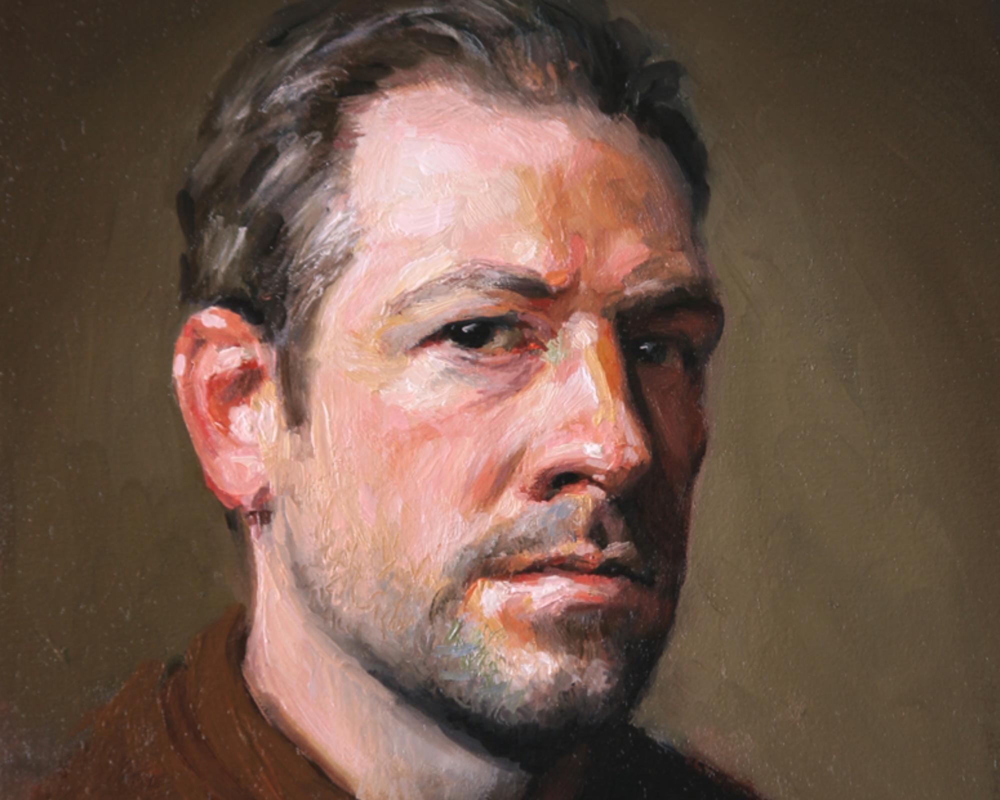
Reitor
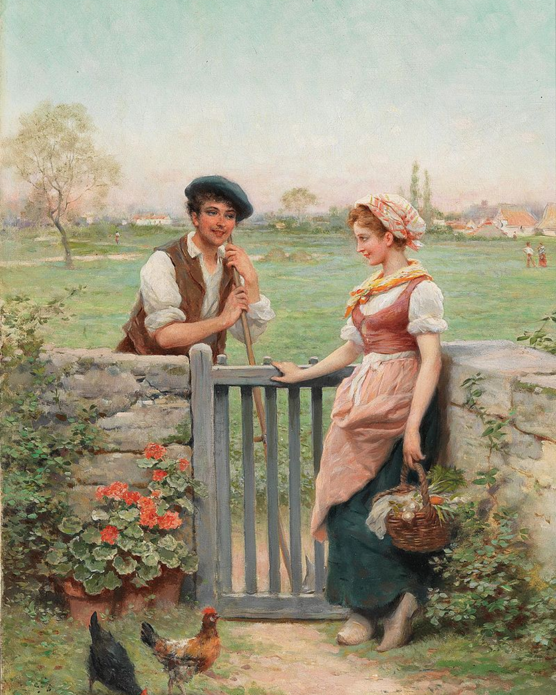Daniel e Margarida
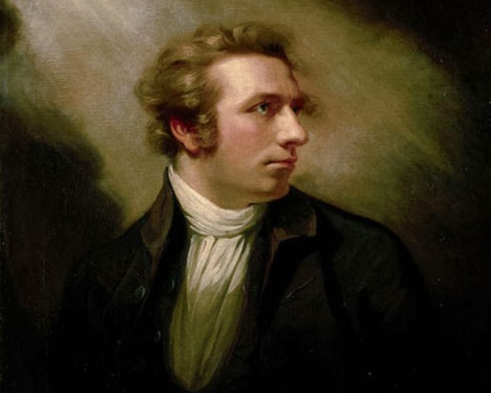Daniel
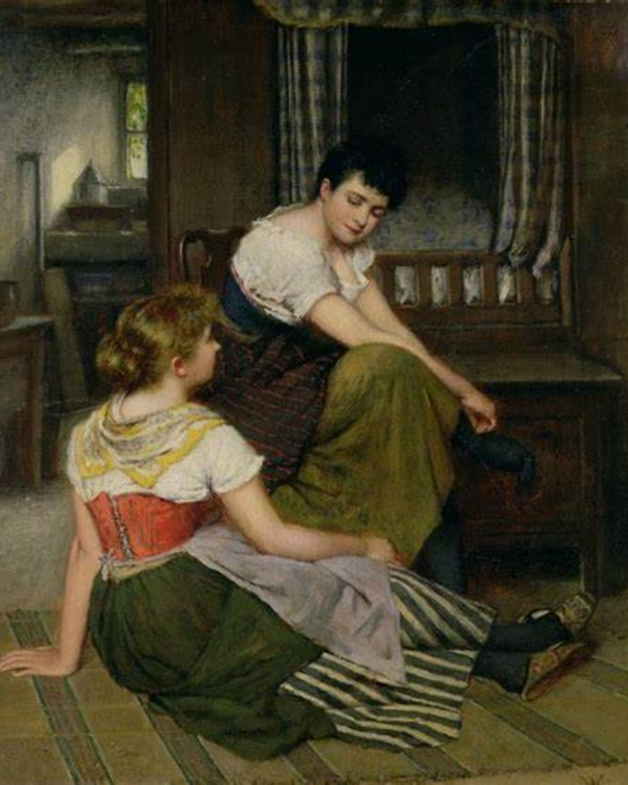
Clara e Guida
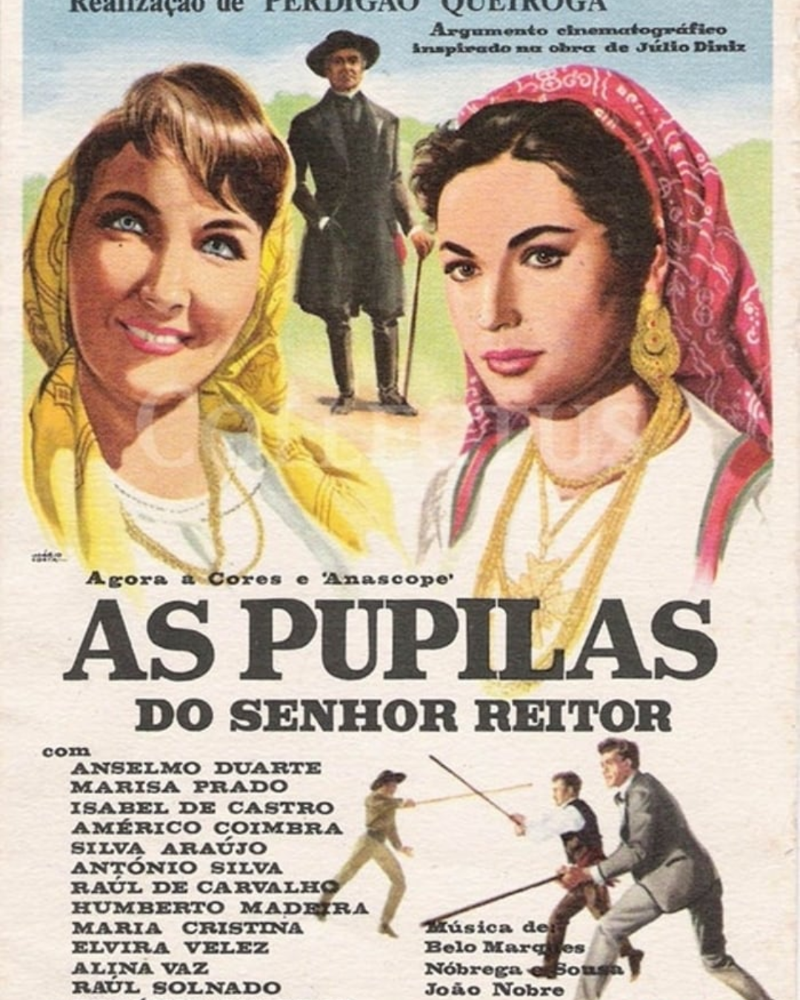Edição do livro
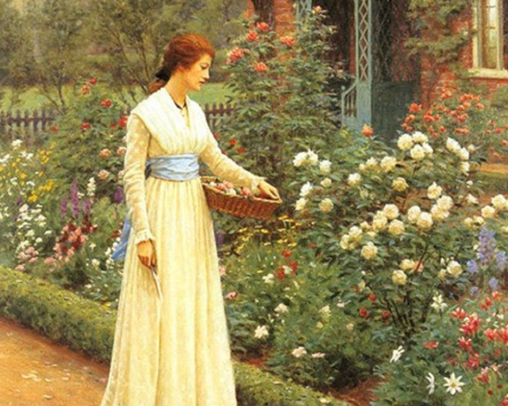Margarida

Aldeia portuguesa
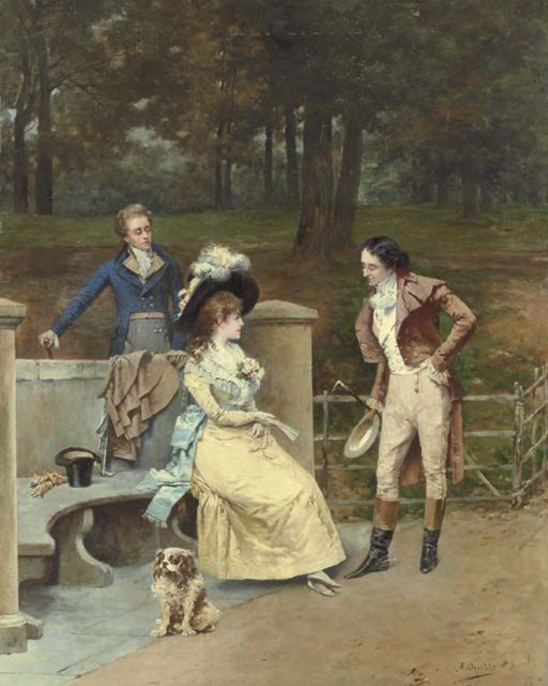Daniel e Clara
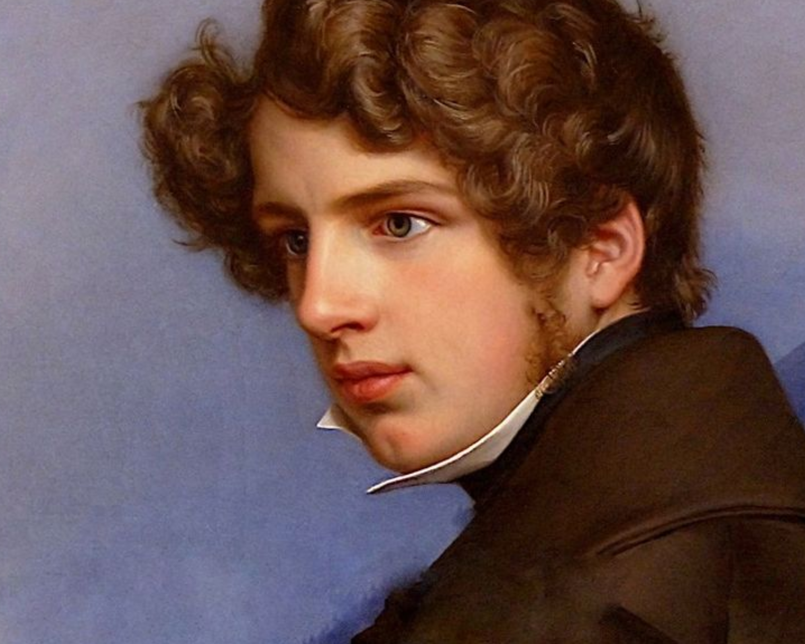Pedro
O livro “As Pupilas dos Senhor Reitor”, tem seu enredo desenvolvido na metade do século XIX, em uma pequena aldeia rural, onde a influência da Igreja Católica e dos padres é dominante. A trama se dá com os desencontros entre as órfãs pupilas do senhor Reitor, Clara e Margarida. A história começa com o Senhor Reitor que ao impor uma educação rígida e moralista às pupilas sob sua responsabilidade, descobre o namoro de Margarida com um rapaz chamado Daniel e o impede. O pai de Daniel, logo que fica sabendo do ocorrido, o envia para estudar Medicina na cidade do Porto, separando o casal. Dez anos depois, Daniel volta para a aldeia, como um médico impulsivo e inconstante, nem se lembrando mais de Margarida, enquanto ela, ainda manteve seu amor por ele. Quando Daniel volta de viagem, seu irmão, Pedro, está noivo de Clara, irmã de Margarida. O jovem médico encanta-se com a cunhada e faz o possível para conquistá-la. Clara, para acabar com os assédios do cunhado, aceita encontrá-lo no jardim, onde são surpreendidos por Pedro e salvos por Margarida, que toma rapidamente o lugar da irmã. No final, tudo se esclarece, Pedro perdoa Clara e Daniel se arrepende de ter se esquecido de Margarida e da promessa que fez nunca se esquecer dela.
Entre as duas pupilas, Clara é a mais jovem. Assim como na relação de Pedro e Daniel, Clara é o oposto de sua irmã. Sendo a única herdeira de seus pais falecidos, filha de um segundo casamento (sua mãe era proprietária rural). Ela fica noiva de Pedro, com quem planeja se casar em breve, mas fica impressionada com a chegada de Daniel vindo do Porto.
A irmã mais velha Margarida é filha do primeiro matrimônio, seu pai, viúvo, casa-se novamente, mas falece pouco tempo após a morte da primeira esposa. Após a perda do pai, Margarida é tratada cruelmente pela madrasta, que a transforma em empregada. Sua infância é solitária, com tarefas árduas, como a de pastorear. Ela passa seus dias isolada nos campos e montanhas, encontrando consolo apenas na presença do jovem Daniel, por quem nutre um amor intenso. Neste romance, Margarida desempenha um papel personificando a bondade, sua vida sofrida e cheia de decepções reflete o caráter realista da história
Daniel é o segundo descendente de José das Dornas. Delicado, inconstante e negligente, especialmente em relação às mulheres. Em todos os aspectos, contrasta com seu irmão. Despreza o trabalho rural, inicia seus estudos em latim e, por fim, parte para a cidade do Porto, retornando muitos anos depois como um médico formado. É um indivíduo extravagante que perturba a tranquilidade da vila, despertando o interesse das mulheres.
Já Pedro é o filho mais velho de José das Dornas. Em tudo semelhante ao pai: robustez, disposição, ingênuo e muito ligado à vida do campo. Apaixona-se por Clara, de quem fica noivo.
O Senhor Reitor, o pároco local, que desempenha um papel fundamental na trama. Ele é uma espécie de arquiteto da história, interferindo diretamente nos acontecimentos. Com o "evangelho no coração", o padre Antônio representa a imagem do religioso autêntico e engajado, cuja vida é dedicada ao serviço dos outros. Sua presença simboliza a importância da fé e da espiritualidade na vida da comunidade. Tanto o reitor quanto o lavrador José das Dornas encarnam valores morais sólidos e exercem uma influência positiva na comunidade em que vivem.
Resenha
Ao ler o romance, podemos perceber o modo realista em que o autor trabalha a trama de
cada personagem, traçando de maneira muito eficiente os limites da situação social do país,
retratando a vida da burguesia portuguesa no século XIX. O folhetim conseguiu quebrar os
parâmetros dos romances anteriores, ao tratar de temas como amor, família, educação e a
dicotomia das coisas da vida, sendo evidente a transição feita para a literatura realista,
que seria publicada anos depois.
Foi de fundamental relevância para a mensagem do autor ao tratar sobre a relação de
conflito entre tradição e progresso, amor e desejo, a figura do Senhor Reitor, que
durante a história foi um símbolo da moralidade. Como dito anteriormente, a trama e
o perfil dos personagens contrastantes são resultado de uma visão crítica sobre a
sociedade e os costumes da época.
A experiencia durante a leitura é imersiva, remetendo a uma aldeia rural típica de
Portugal, onde os costumes, festas e valores são deixados bem claro para o leitor;
para mim, aqui o papel da natureza é carregado de simbolismo, principalmente no que
se refere as tradições.
Os personagens de "As Pupilas do Senhor Reitor" são autênticos e realistas, representando
diferentes facetas da sociedade rural portuguesa. Isso é possível observar nas diferentes
produções audiovisuais que adaptaram a trama de Júlio.
A obra traz um caráter individualista para as personagens, de modo a moralidade do padre
não representa os costumes da época, já o individualismo sim. A jornada das pupilas em
busca de liberdade e do controle da própria vida é um exemplo de como os costumes do
período se afastavam da religiosidade e se aproximavam dos interesses burgueses.
O texto remete ao termo em latim, “fugere urbem” (fugir da cidade), e traz Júlio Diniz
propondo uma idealização da natureza, não tão estática como descrita pelos árcades,
porém como um meio participativo da vida pessimista das personagens. Ao ler a obra, é
perceptível a vida angustiante levada pelas pessoas da história, o que explica os autores
romantistas serem lembrados como “mal do século”.
"As lágrimas são para o coração o que a chuva é para a terra seca."
"Há uma verdade que as escolas não ensinam, mas a vida se encarrega de ensinar: o tempo
é o melhor remédio para todas as feridas."
"Nunca mais as páginas do livro dos sonhos voltaram a ser folheadas por eles."
O romancismo está presente até os dias de hoje na vida cotidiana. As músicas da atualidade
em sua maioria narram a dualidade das pessoas, contando sobre diferentes tipos de amores,
nos quais muitas das vezes fogem dos costumes e mostram uma jornada de amor para a vida
inteira. Da mesma forma que no século XIX, a natureza é usada como recurso linguístico
para expressar o desejo entre duas pessoas, seja ele de forma pessimista ou não.
Reitor
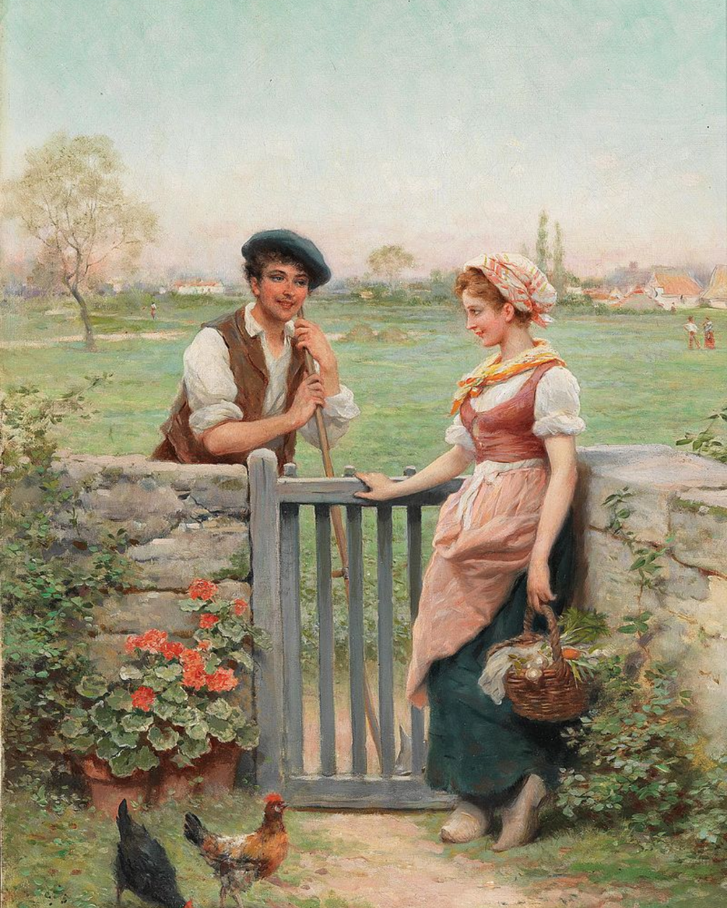Daniel e Margarida
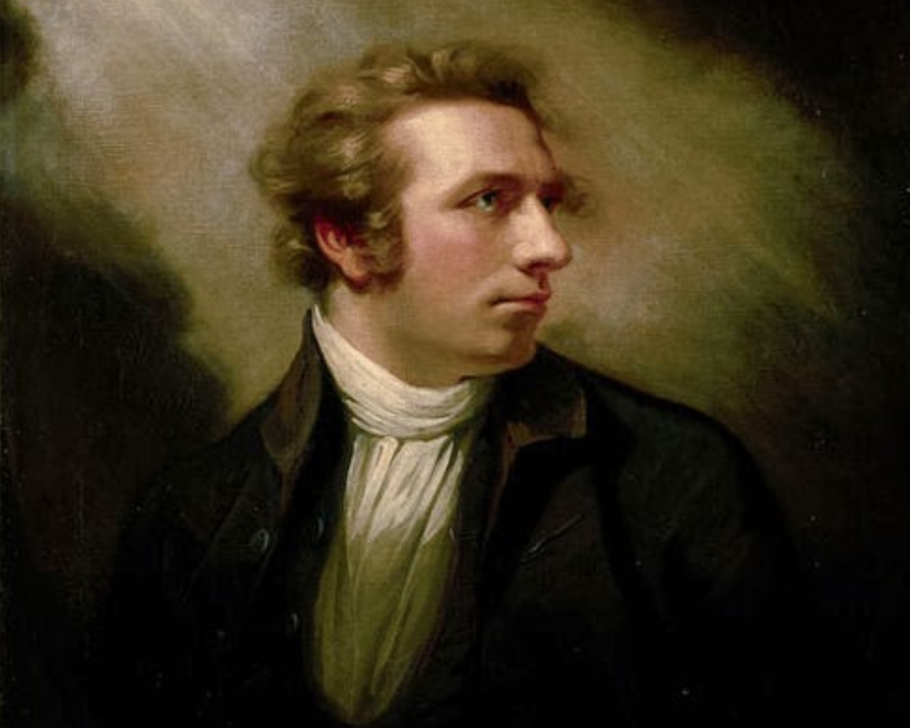Daniel
Clara e Guida
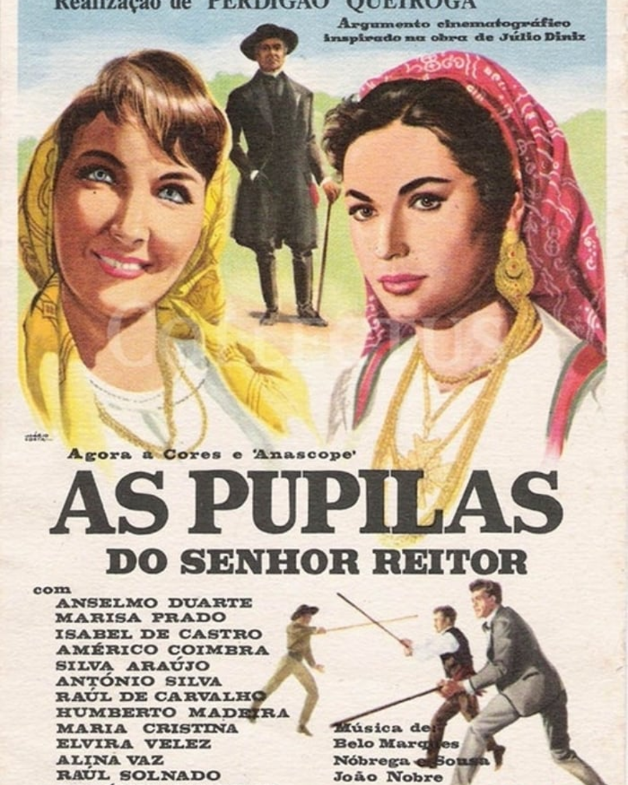Edição do livro
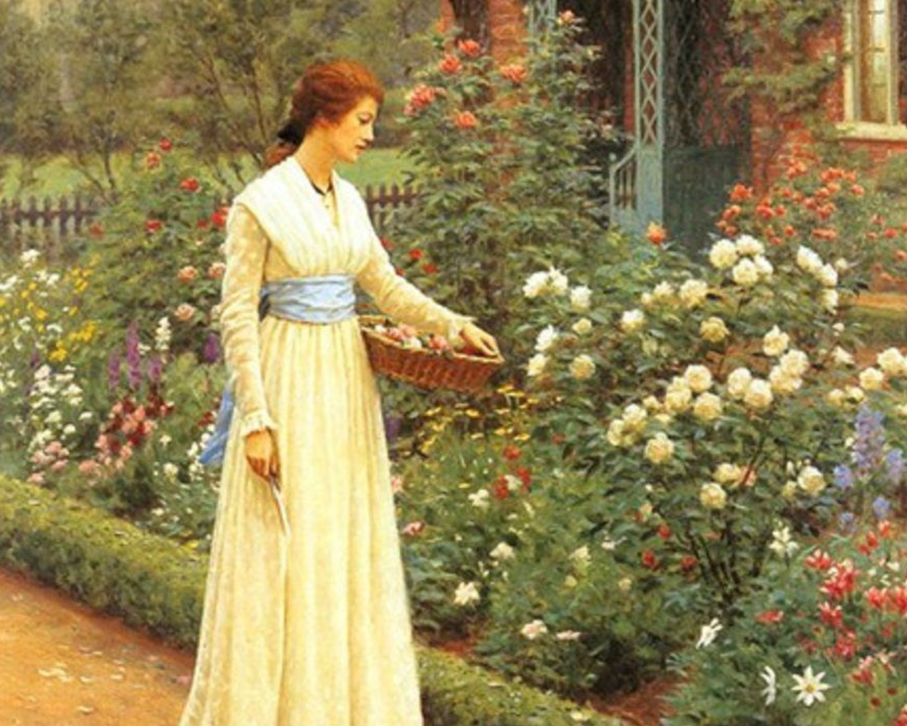Margarida
Aldeia portuguesa
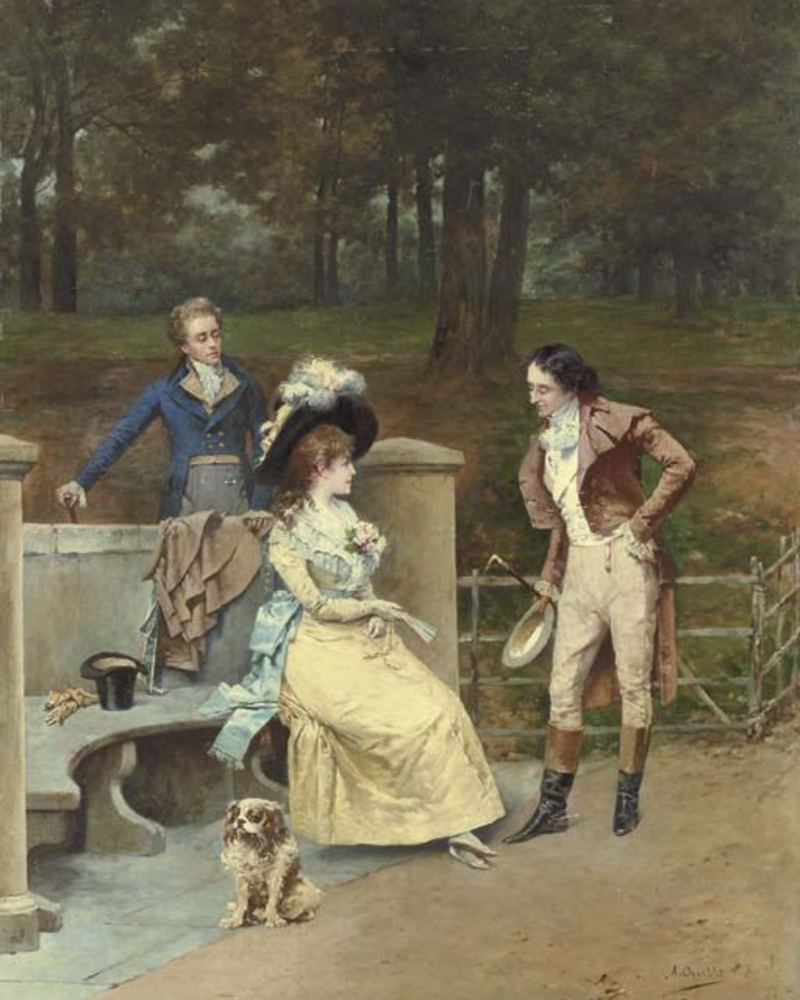Daniel e Clara
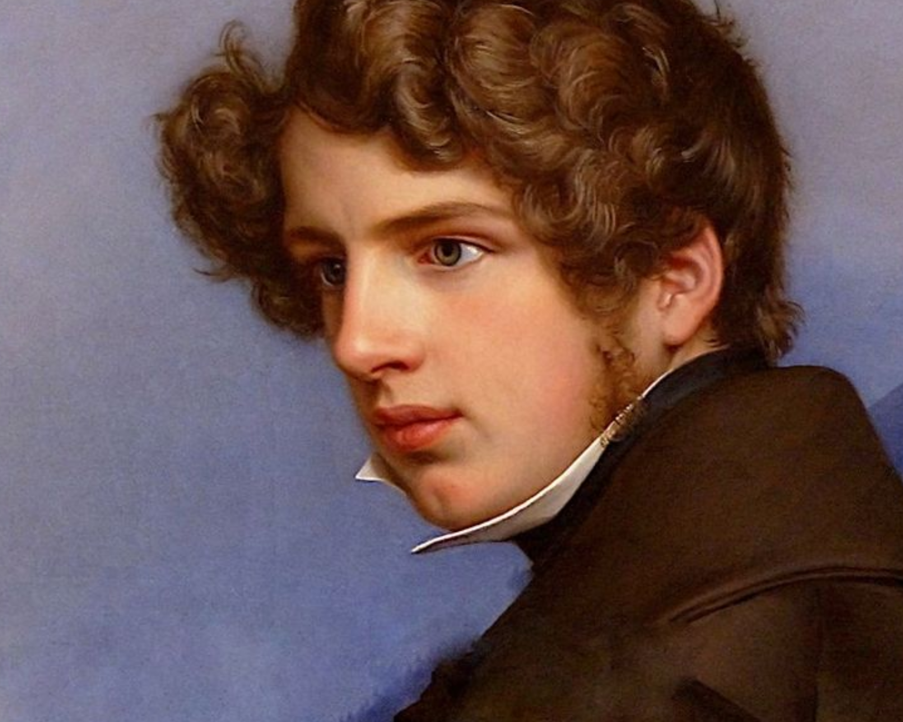Pedro
O romance do século XIX retratava principalmente o mundo burguês, que estava em ascensão nesse período. Ele explorava as
questões e os dilemas da classe média emergente, abordando temas como amor, casamento, ambição, relações sociais e
mudanças sociais.
Além disso, no século XIX, era comum publicar romances em partes nos jornais, na forma de folhetins. Os folhetins eram
eções de jornais que publicavam capítulos de romances em sequência, atraindo a atenção dos leitores e criando um grande
suspense para saber o que aconteceria no próximo capítulo. Essa forma de publicação serializada permitia que os leitores
acompanhassem a história ao longo do tempo, criando uma grande expectativa.
Portanto, a opção D) XIX - o mundo burguês - folhetim preenche corretamente as lacunas do texto, considerando o período
em que o romance se desenvolveu, o tema predominante abordado e a forma de publicação em partes nos jornais, conhecida
como folhetim.
Na obra "As Pupilas do Senhor Reitor", o Sr. Reitor é retratado como alguém que está sempre envolvido na vida das personagens
e dando bons conselhos. Ele é visto como uma figura sábia e respeitada, que possui uma perspectiva equilibrada e ponderada
sobre os acontecimentos.
O Sr. Reitor desempenha o papel de conselheiro e mentor para as personagens, oferecendo orientação e sabedoria em momentos de
dificuldade. Ele é retratado como alguém que possui uma compreensão profunda da natureza humana e das questões morais.
Sua presença na vida das personagens é frequentemente associada a conselhos sensatos e soluções para os problemas que
surgem ao longo da narrativa. Ele é visto como uma voz de razão, capaz de guiar as personagens em suas decisões e atitudes.
Portanto, a opção B) A voz da razão das personagens é a resposta correta, pois o Sr. Reitor representa essa figura que
oferece conselhos e sabedoria para as personagens da obra.
O Romantismo foi um movimento cultural e artístico que surgiu no final do século XVIII e se estendeu até meados do século XIX.
Ele se caracterizou por uma valorização das emoções, da subjetividade e do individualismo, contrastando com o racionalismo
predominante no período anterior, o Iluminismo.
O egocentrismo é uma característica marcante do Romantismo, pois os artistas e escritores românticos tendiam a focar em suas
próprias emoções, sentimentos e experiências pessoais como fonte de inspiração. Eles buscavam expressar suas angústias, desejos
e melancolias de forma intensa e profunda.
A hipersensibilidade também é uma marca do Romantismo, uma vez que os românticos valorizavam a intensidade emocional e a reação
emocional exagerada diante dos eventos e experiências da vida.
A melancolia, o pessimismo, a angústia e o desespero são sentimentos frequentemente presentes nas obras românticas. Os
românticos muitas vezes retratavam a condição humana como trágica, cheia de conflitos internos e insatisfações, refletindo
um sentimento de desilusão com a realidade e com os rumos da sociedade.
Portanto, a alternativa correta é a letra C) egocentrismo, hipersensibilidade, melancolia, pessimismo, angústia e desespero.
http://isacliteratura.blogspot.com/2009/05/questoes-de-multipla-escolha.html
https://mundoeducacao.uol.com.br/literatura/rom0antismo-portugal.htm#:~:text=Terceira%20fase%20do%20romantismo%20em,
apesar%20de%20seu%20car%C3%A1ter%20sentimental.
https://www.passeiweb.com/as_pupilas_do_senhor_reitor/#:~:text=O%20reitor%2C%20su
a%20%E2%80%9Cpupilas%E2%80%9D,os%20personagens%20principais%20do%20romance.
[Resenha] As Pupilas do Senhor Reitor (Júlio Dinis)
Opinião | As Pupilas do Senhor Reitor
ROMANTISMO (PARTE 1): Resumo do contexto histórico e características | Escolas Literárias